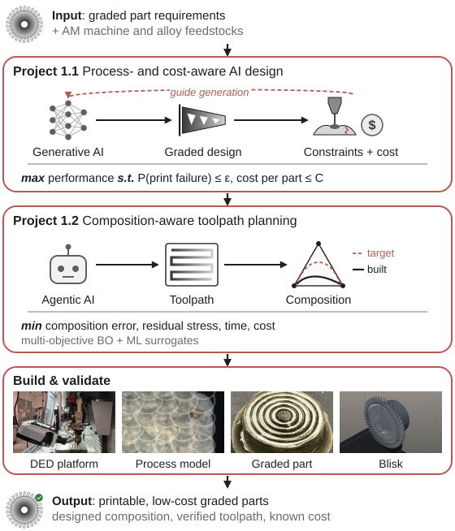
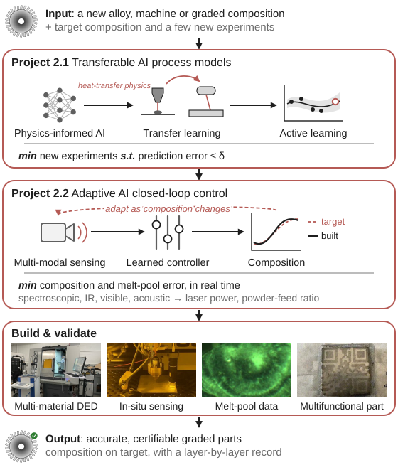

Both challenges in parallel
Project 1.1 starts with established AM design rules; Projects 2.1 and 2.2 build on the existing multi-material DED platform.
My research vision is for manufacturing to keep pace with AI design, so that every material and part that AI designs can be built accurately, quickly and at a cost industry can use.
AI is speeding up the design of materials and components, generating new alloys, architectures and parts far faster than any human team. Many of the most promising designs, especially functionally graded parts with complex 3D composition gradients, are best suited to additive manufacturing (AM). As design accelerates, manufacturing has become the bottleneck, from two sides:
The Additive Innovation and Artificial Intelligence (AI²) Lab will remove the manufacturing bottleneck from both sides: building manufacturability and cost into AI design, and making AM accurate and reliable enough to build what AI designs.
My background spans AI-driven design and process optimization through to building and improving metal AM machines, mainly directed energy deposition (DED), with laser powder bed fusion (LPBF) as a second process.
Generative and agentic AI can now push the boundaries of high-performing designs, but they rarely account for what a metal AM machine can build, or at what cost.
Problem. AI-generated designs for functionally graded parts often demand what metal AM cannot build: features finer than the deposition resolution, abrupt composition changes that crack, and fabrication costs that outweigh the performance gain. Current design-for-AM tools apply generic geometric rules and ignore the machine, the materials and the cost.
Plan. A process- and cost-aware generative AI framework, in which two models constrain the design of geometry and composition while it is generated, rather than filtering designs afterwards:
The process models come from Project 2.1.
AI: generative design + uncertainty-aware process modelsProblem. In graded parts, the path, deposition sequence and parameters decide where each material ends up, how heat builds up and how long the build takes. Commercial toolpath software plans geometry, not composition.
Plan. A composition-aware toolpath planner:
First target: a blisk graded from a fatigue-resistant bore to creep-resistant blades, which removes the sharp interface of dual-alloy designs. The planner will be co-developed with AM software and machine companies.
AI: multi-objective Bayesian optimization + ML surrogates + agentic AI
AI now completes a design iteration in hours, while building the resulting part still takes weeks to months. Manufacturing has therefore become the bottleneck of AI-driven design.
Problem. AI process-optimization models find the AM parameters that give a target part quality (dimensional accuracy, microstructure, mechanical properties) far faster than trial and error. But they are usually trained on one alloy and one machine, so a new alloy or machine means repeating costly experiments from scratch. Graded parts make this worse, because every intermediate composition behaves like a new alloy.
Plan. Physics-informed AI process-optimization models that transfer across compositions, machines and AM processes with few new experiments:
These models supply the process model for Project 1.1 and the surrogates for Project 1.2.
AI: physics-informed learning + transfer learning + active learningProblem. Closed-loop control maintains part quality by adjusting the process in situ, but existing controllers are material-agnostic. In graded parts they cannot account for the changes in thermal properties and melt-pool behaviour as the composition changes.
Plan. Adaptive AI controllers that track the planned composition and correct deviations in real time:
What sets it apart: closed-loop control of composition, not just melt-pool geometry, on a multi-material DED platform.
AI: learned adaptive control + multi-modal sensing
Project 1.1 starts with established AM design rules; Projects 2.1 and 2.2 build on the existing multi-material DED platform.
Process models from Project 2.1 replace the generic rules in Project 1.1 and supply the fast evaluations for Project 1.2.
AI design and AM work as one system: every design arrives with a toolpath, a process model and a control strategy that make it buildable, plus the record needed to qualify it. The approach extends to welding-based repair and hybrid additive–subtractive manufacturing.
The AI² Lab will train engineers who can design with AI and build what it designs.